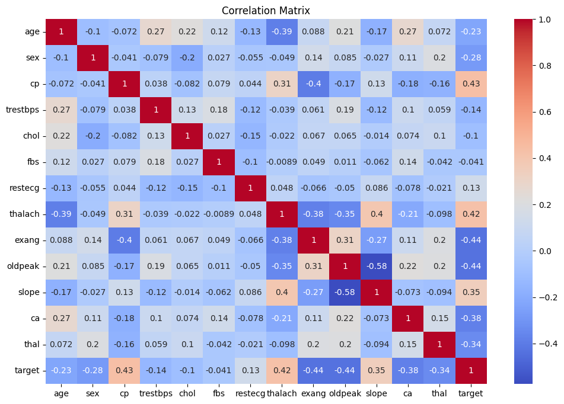
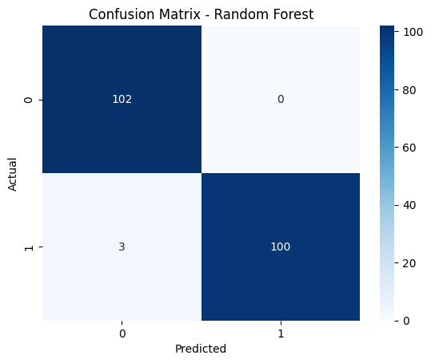

🫀 Heart Disease Prediction using Machine Learning 🤖
Introduction
This project uses machine learning to predict whether a patient has heart disease
based on several clinical features such as age, sex, blood pressure, and cholesterol levels.
Multiple models were trained, including Random Forest,
to provide a preliminary diagnosis using CSV or Excel patient data.
Main Goals
- Demonstrate a complete ML workflow (EDA, preprocessing, training, evaluation).
- Allow users to upload patient files and get instant predictions.
- Identify key features correlated with heart disease.
Dataset Features
- age – Age of the patient
- sex – Gender (0 = female, 1 = male)
- cp – Chest pain type
- trestbps – Resting blood pressure
- chol – Serum cholesterol
- fbs – Fasting blood sugar
- restecg – ECG results
- thalach – Max heart rate
- exang – Exercise-induced angina
- oldpeak – ST depression
- slope, ca, thal
Dataset Visualization

Model Performance
Random Forest Accuracy: 98.5%

Sample Output
🩺 Diagnosis Results:
🫀 Patient #1: Heart disease detected (preliminary diagnosis)
Conclusion
This project demonstrates how machine learning can assist in early heart disease prediction.
The model achieved high accuracy and can analyze new patient data effectively.
⚠️ This is a preliminary diagnostic tool and should not replace professional medical advice.
Author
Lilian Alhalabi